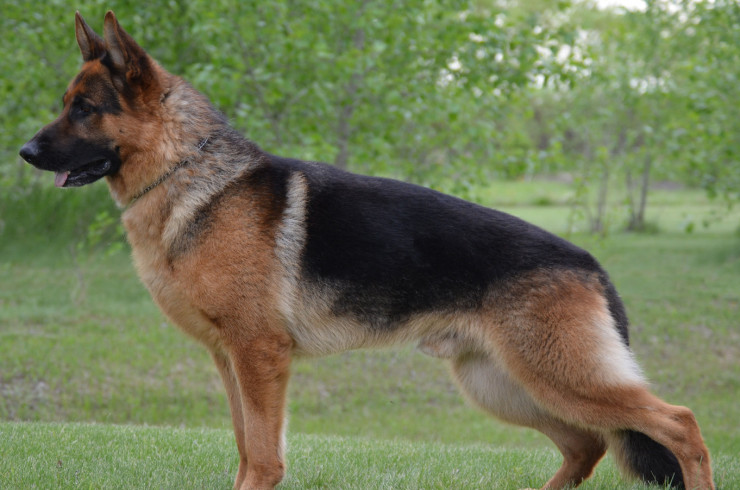

Овчарка
Овчарка — общее название ряда пород пастушьих собак, изначально выведенных как помощники пастухов овец (овчаров) и другого скота.Ряд из них используется в качестве служебных собак.
Немецкая овчарка была получена в результате селекции и скрещивания некоторых разновидностей гуртовых собак Центральной и Южной Германии. Различают гладкошёрстную и длинношёрстную разновидности.
Определяется два основных центра происхождения, а именно на нынешней территории Скандинавии и Северо-Западной России. Существует мнение, что при формировании породы подмешивали крови индийского волка.
Немецкая овчарка как культурная, заводская порода существует менее ста лет. Но она имеет более длительную историю как аборигенная порода, созданная пастухами и крестьянами Германии, на протяжении нескольких веков отбиравших только самых подходящих для работы собак.
Немецкая овчарка как заводская порода была выведена в конце XIX века. Своим официальным рождением порода обязана усилиям основателей Клуба (Ассоциации) любителей породы собак немецкая овчарка (Der Verein für Deutsche Schäferhunde), во главе которого стоял ротмистр Макс Эмиль Фредерик фон Штефаниц, по праву считающийся крестным отцом этой породы собак. Широта взглядов фон Штефаница позволила ему без всякой предвзятости оценивать различные типы овчарок, чтобы создать некий универсальный тип. В основу будущей породы лёг один-единственный принцип: «Немецкой овчаркой считается любая пастушья собака, обитающая в Германии, которая, благодаря постоянным тренировкам её качеств пастушьей собаки, достигает телесного и психического совершенства в рамках своей утилитарной функции».
